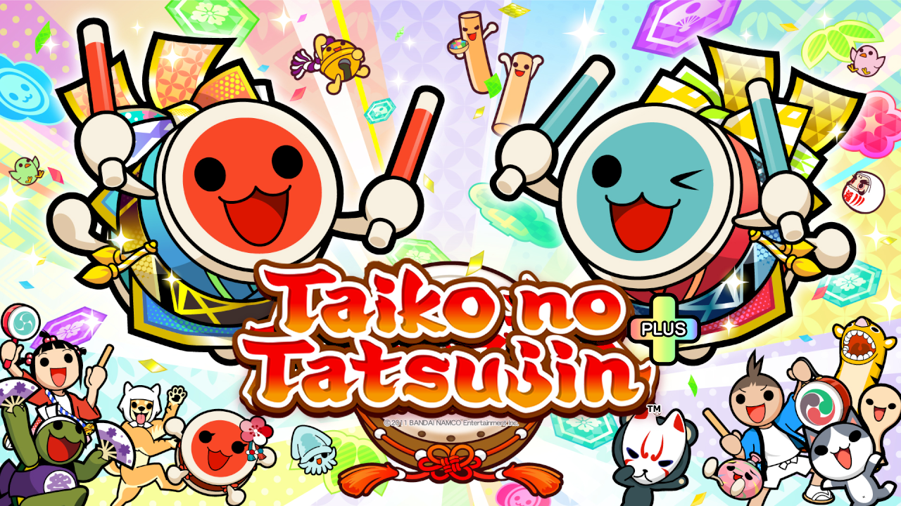

<!DOCTYPE html>
<html lang="kr">
<head>
    <meta charset="UTF-8">
    <meta name="viewport" content="width=device-width, initial-scale=1.0">
    <script>
        function redirectToCountry() {
            const userLanguage = navigator.language;
            const userCountry = userLanguage.substring(0, 2);

            switch (userCountry) {
                case "ja":
                    redirectURL = "jp.html";
                    break;
                case "ko":
                    break;
                default:
                    redirectURL = "en.html";
            }
            window.location.href = redirectURL;
        }
    </script>
</head>
<body onload="redirectToCountry()">
</body>
</html>
<head><meta name="google-site-verification" content="8kkgkUUTwcU3FvJ1mE6Z9BAoa1EHFW5sqPjJrN4zuJo" /><head>
<html lang="kr" class="js skrollr skrollr-desktop"><head prefix="og: http://ogp.me/ns# fb: http://ogp.me/ns/fb# article: http://ogp.me/ns/article#"><meta http-equiv="Content-Type" content="text/html; charset=UTF-8">
<meta name="viewport" content="width=device-width,user-scalable=no,maximum-scale=1,initial-scale=1.0">
<title>태고의 달인 니지이로 플러스 버전 | EXPLUS </title>
<meta name="keywords" content="太鼓の達人ニジイロプラス","Taiko Nijiiro Plus">
<meta name="description" content="Taiko no Tatsujin Unofficial Server.">
<meta property="og:type" content="website">
<meta property="og:title" content="Taiko no Tatsujin Nijiiro Plus ver.">
<meta property="og:site_name" content="Taiko no Tatsujin Nijiiro Plus ver.">
<meta property="og:description" content="Taiko no Tatsujin Unofficial Server.">
<link rel="shortcut icon" href="./kr/nijiiro_plus_icon.ico">
<link rel="apple-touch-icon" href="./kr/nijiiro_plus_icon.ico">

<!--[if lte IE 8]>
<script src="js/html5shiv.js" type="text/javascript"></script>
<![endif]-->
<link rel="stylesheet" href="./kr/basic-1.0.css">
<link rel="stylesheet" href="./kr/top.css">
<link rel="stylesheet" href="./kr/slick.css">
<link rel="stylesheet" href="./kr/slick-theme.css">
<link rel="stylesheet" href="./kr/jquery.fancybox.css">
<script async="" src="./kr/gtm.js"></script><script src="./kr/jquery.min.js"></script>
<script src="./kr/common.min.js"></script>
<script src="./kr/respond.js"></script>
<script src="./kr/slick.min.js"></script>
<script src="./kr/jquery.fancybox.min.js"></script>
<meta name="google-site-verification" content="wqqK-l9vwoDXn16ILZQ1st6nFNeCK1jw0Bbp_PQOWbA">
<!-- Google Tag Manager -->
<script>(function(w,d,s,l,i){w[l]=w[l]||[];w[l].push({'gtm.start':
new Date().getTime(),event:'gtm.js'});var f=d.getElementsByTagName(s)[0],
j=d.createElement(s),dl=l!='dataLayer'?'&l='+l:'';j.async=true;j.src=
'https://www.googletagmanager.com/gtm.js?id='+i+dl;f.parentNode.insertBefore(j,f);
})(window,document,'script','dataLayer','GTM-KFKT6GC');</script>
<!-- End Google Tag Manager -->
<script charset="utf-8" src="./kr/timeline.e108540dddc96e4b707f5cf259a582d7.js"></script></head>

<body id="home" data-0="background-position:center 0px;" data-100000="background-position:center -50000px;" class="skrollable skrollable-between" style="background-position: center -0.5px;">
  <!-- Google Tag Manager (noscript) -->
<noscript><iframe src="https://www.googletagmanager.com/ns.html?id=GTM-KFKT6GC"
height="0" width="0" style="display:none;visibility:hidden"></iframe></noscript>
<!-- End Google Tag Manager (noscript) -->
  <div id="container" data-0="background-position:center 0px;" data-100000="background-position:center -20000px;" class="skrollable skrollable-between" style="background-position: center 0px;">
  <div class="loadingWrap" style="display: none;"></div>
<center>
<br>
<br>
<a href="en.html"><br></a><div id="mv">
        <div id="snav" class="fixed">
          <ul class="col2">
            <li><a href="https://taikoplus.github.io/asia-blog/home.html" target="_blank" rel="noopener"></a></li>
<li><a href="kr-dl.html" target="_blank" rel="noopener"></a></li>			           
					   <li><a href="kr-how.html" target="_blank" rel="noopener"></a></li>
                      </ul>
        </div>
		
<center>
<a href="en.html"><br></a><div id="mv">
태고의 달인 니지이로 플러스 버전은,<br>
집에서도 마음껏 연주하는 리듬게임!
<br></div>
<br>
<br>
<br>
<br>
그 외에도 다수!<br><br><br>
                  <a href="https://taikoplus.github.io/asia-blog/home.html" target="_blank"><br>
				  				  		  <a href="kr-how.html" target="_blank"><br>
 <a href="kr-dl.html" target="_blank"><br>                 </ul>
<p id="ptop"><a href="en.html">PAGE TOP</a></p>
This unofficial simulator is unaffiliated with BANDAI NAMCO.<br>
Game System From ©Bandai Namco Entertainment Inc.<br>
Custom Patch From EXPLUS<br>

</a>